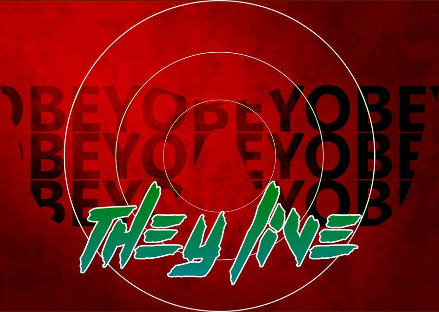

Estamos quase nos despedindo, e com toda sinceridade espero que tenha aproveitado ao máximo este curso e que tenha gostado de tudo o que aprendeu aqui. Todo o conteúdo necessário para você dar seus primeiros passos no mundo do Design Gráfico foram transmitidos, e junto a eles, conhecimentos teóricos fundamentais para você se tornar um bom designer, além da base prática para dominar os softwares mais utilizados no setor. Por esse motivo, este último capítulo não visa transmitir conhecimento, mas testar o que você já aprendeu.
Te passarei agora três desafios, um para o Inkscape, para testar seus conhecimentos de criação vetorial, outro para o Publisher, para testar seus conhecimentos em editoração, e o último para o GIMP, para testar seus conhecimentos em edição de bitmaps.
Cada um dos próximos exercícios foi feito com o software indicado para o desafio e utilizando unicamente as técnicas ensinadas neste curso.
Neste desafio do Inkscape você terá de criar um cartaz do filme Eles Vivem, de 1989, para tal, você deverá baixar a fonte Kill the noise no site DaFonte, ou instalá-la a partir da pasta de arquivos do curso. Veja abaixo o resultado final.
Fonte do texto They Live: Kill the noise (Dafonte.com).
Fonte do texto Obey: Segoe UI, (estilo Bold).
Dica: Nesta arte há recursos de clipagem e mesclagem!